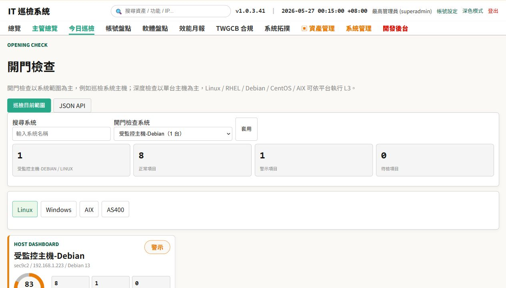
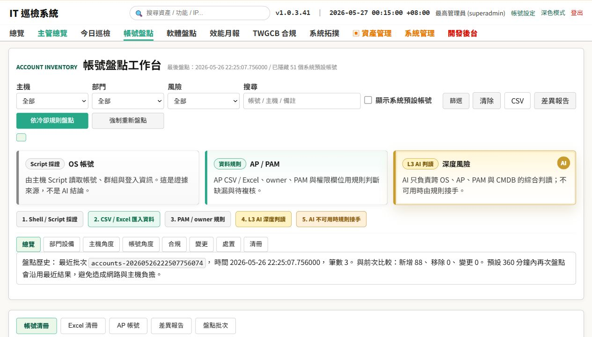
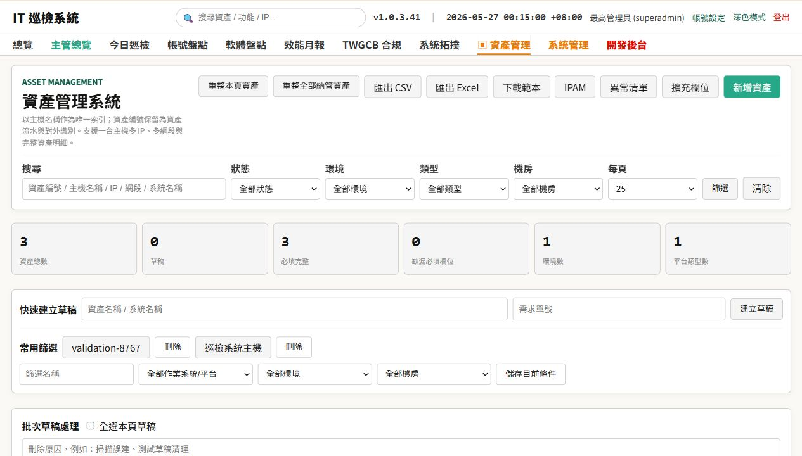
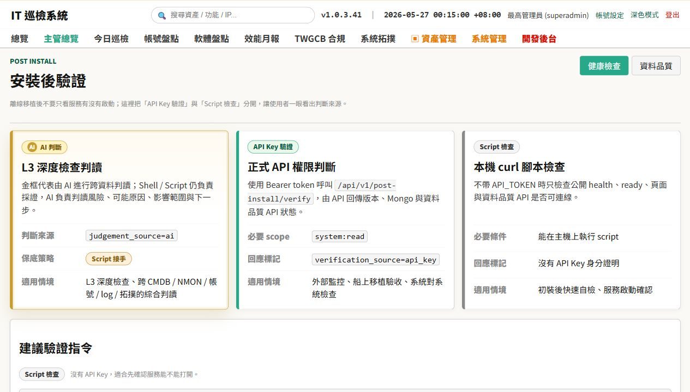
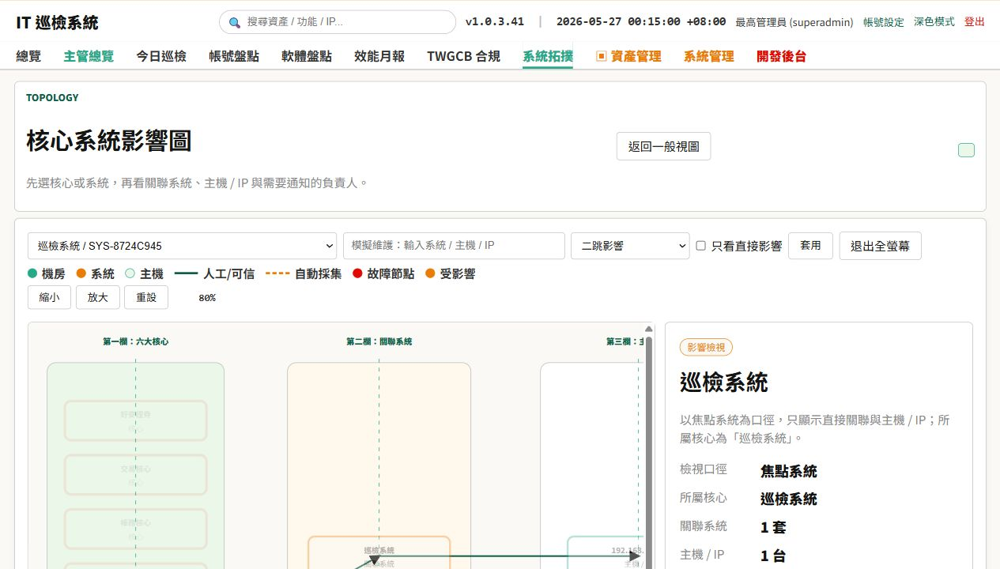
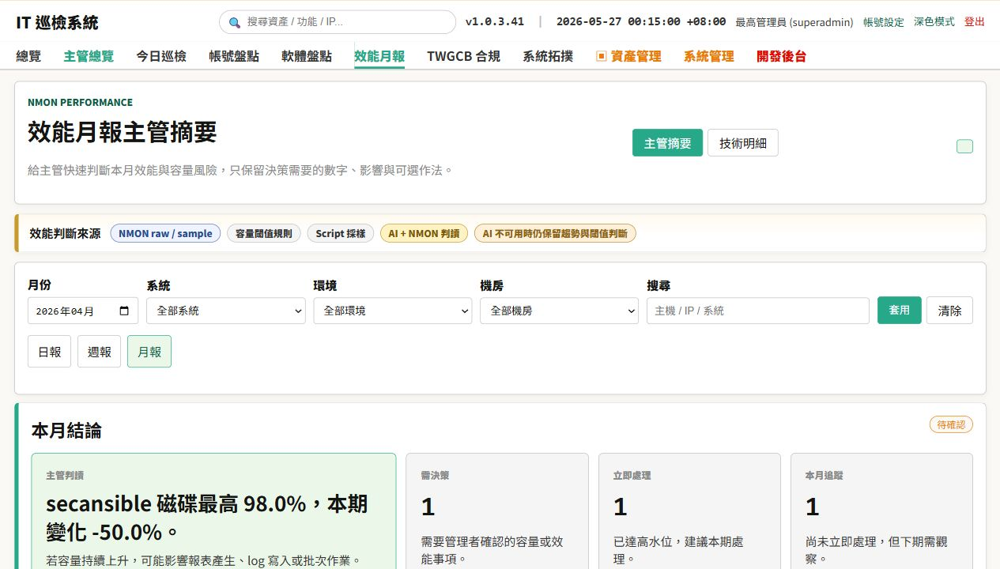
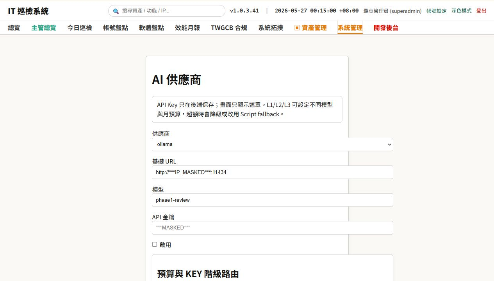
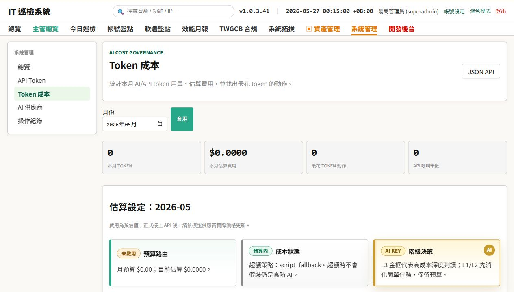

資料分散
CMDB、掃描結果、帳號盤點、效能紀錄分散在不同工具與檔案。
早上開門檢查先看到幾個異常訊號，當時還不確定是否會影響服務。 到 10:30 盤中交易量衝上來，部分設定、容量與處理節奏沒有完全跟上， 核心服務開始出現消化不良。維運團隊需要更快把已掌握的主機、效能、 拓撲與通知線索先整理出來；帳號與 owner 資訊則逐步補齊，形成可以討論的畫面。
CMDB、掃描結果、帳號盤點、效能紀錄分散在不同工具與檔案。
Script 可以查出現象，但影響範圍、風險等級與處置順序仍仰賴人工。
主管需要結論與建議，現場常只有 log、CSV、掃描文字與口頭經驗。


開門檢查頁面可作為盤前觀察訊號；L3 深度判讀畫面則說明資料可進一步整理成風險與建議。
webitgpt 將資產、帳號、拓撲、效能與巡檢放到同一個維運工作台。 目標不是多做一張報表，而是讓事件發生時，更快看見「誰可能受影響、證據在哪、下一步可先確認什麼」。


當交易量上來、設定或容量開始吃緊時，維運人員不需要完全從零開始整理資料。平台從資產、拓撲、效能、 帳號與巡檢結果建立共同畫面，讓團隊先有一致的討論基礎。
核心影響圖與資產清單協助先看關聯系統、主機/IP、通知線索與可能受影響範圍。

nmap、NMON、巡檢、帳號盤點與 PAM/owner 規則集中呈現，避免多工具切換。

異常不只停在 log，而是整理成風險、影響、建議處置與待確認項目。
註：本頁使用實機截圖作為畫面證據；畫面為實機截圖，備詢時可由系統入口開啟相同功能。
這些功能共同回答四個問題：資產是誰、誰有權限、目前狀態如何、異常會影響誰。
CMDB CSV/Excel 匯入、草稿區、欄位驗證、錯誤列回報、正式資產管理。
OS/AP 帳號、權限、owner、PAM 狀態與異常彙整，補足應用帳號缺口。
NMON 日/週/月報、EOS 摘要、L1/L2/L3 巡檢、Script 採證與結果追蹤。
核心系統影響圖、關聯系統、主機/IP、Ghost 清單與通知名單匯出。
AI 先作為維運採證後的輔助判讀。平台採用分工設計：Shell/Script/API 負責取得事實， AI 協助摘要、分級、跨資料源關聯與建議行動。
協助縮短資料收集、比對與回報整理時間。
協助提醒關聯系統、帳號權限與通知對象。
透過來源標示、預算控管與紀錄，保留可追溯脈絡。


時程設計先建立資料與採證基礎，再完成營運可視化，最後導入 AI 判讀、成本治理與正式驗收。
webitgpt 的價值來自跨單位資料與維運流程的整合。導入時建議先把資料來源、 採證方式、權限、成本與版本流程定義清楚，讓平台成為共同協作的工作台。
| 治理面向 | 目的 | 建議做法 |
|---|---|---|
| CMDB 資料品質 | 讓資產、拓撲、帳號與 AI 判讀能建立在一致欄位上。 | 建立資料負責窗口，定義必填/選填/允許空值與錯誤列處理。 |
| Script 採證維護 | 保留可追溯的事實來源，讓 AI 判讀有可靠依據。 | nmap、NMON、SSH、WinRM、帳號查詢納入測試與版本紀錄。 |
| AI 判讀治理 | 讓 AI 協助摘要與分級，同時保留高風險操作的控管。 | 停機、停帳、修補與異動保留人工覆核、來源證據與回滾流程。 |
| API Key 與成本 | 讓 AI 使用可預期、可追蹤，也能控制成本。 | L1/L2/L3 分級，超額時自動降級或停用，保留 debug log。 |
推廣時建議把平台定位成共同維運治理工具，由各單位一起定義資料、流程、 權限與驗收方式，讓既有經驗可以被系統化累積。
每個系統、主機、AP 帳號、備份與個資欄位建議有對應維護窗口。
共同定義 CMDB 與帳號盤點必要欄位、選填欄位與空值規則。
匯入、草稿審核、異常確認與追蹤關閉，建議有共同操作流程。
讀取、匯出、巡檢、管理、API Key 設定建議分角色。
明確區分 AI 判讀、AI-ready 與需要人工覆核的情境。
匯入成功率、巡檢覆蓋率、NMON 覆蓋率、拓撲正確率、異常追蹤率。